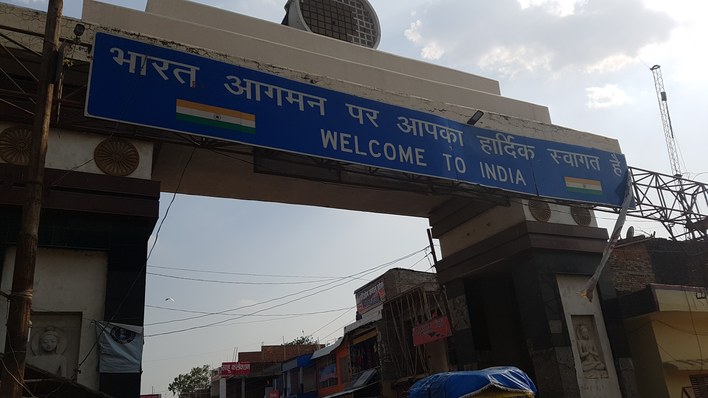
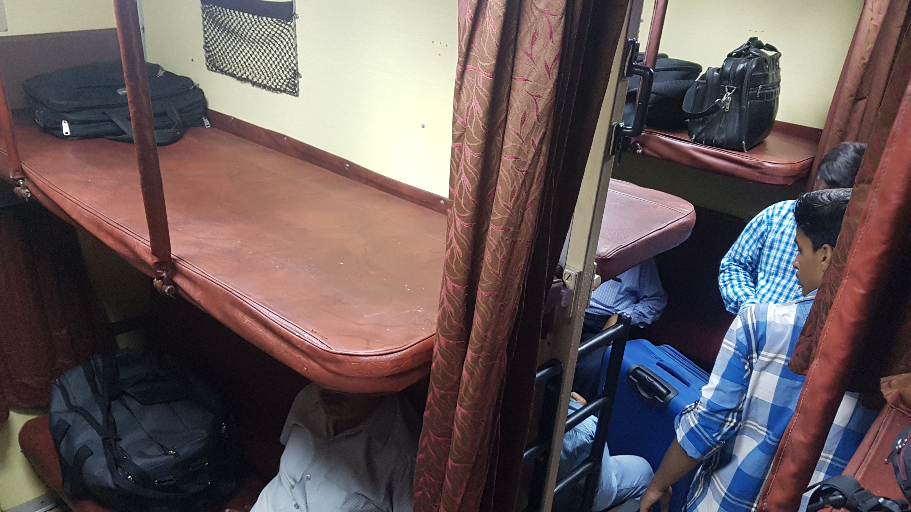

포카라를 떠나 인도로
2017년 05월 02일
여행 D+29, 포카라 D+8
인도로 출발
드디어 포카라를 떠나는날 택시를 타고 버스정류장으로 가는길. 4주 동안 무척 익숙해진 풍경들이 아쉽기만 하다. 하지만 익숙함은 여행자의 적이 아닐까. 어떤 여행자는 한 장소에 오래 머무는것이 좋다고는 하지만 나는 생각이 조금 다르다. 한 장소에 오래 머문다고 다 좋은건 아닌것같다. 오래 머물더라도 그 거점을두고 이것저것 많이 경험 하는것은 좋은것 같다. 그러나 나는 그렇게 부지런한 여행자 타입은 아닌것 같다. 한 장소에 있으면 그냥 그 편안함에 익숙해져버려서 더이상 여행이 아닌 그저그런 휴양이 되어 버리는것 같다.
오늘의 미션은 포카라에서 인도 바라나시까지 이동하는것이다. 역시 내 성격상 많이 알아보지는 못했다. 포카라에서 소나울리 -> 인도 국경통과 -> 버스타고 고락푸르 -> 고락푸르에서 기차타고 바라나시. 이렇게 가면 된다는 정보만 가지고 출발했다.
소나울리행 버스 : 지옥의 8시간 반
버스출발 7시 버스 티케터는 오후 2시에 도착한다고 했지만 어떤 현지인은 불가능하다며 3.4시에 도착할거라고 한다. 그 많던 여행자들은 다 어디가고 그 버스에는 현지인 2명과 나 혼자만 탔다. 포카라에 있는 수많은 여행자들이 인도 바라나시로 갈텐데 왜 다들 이 버스를 안탄거지?
여행은 장소와 사람의 수많은 만남과 헤어짐 거기서 생기는 반가움과 아쉬움을 정말 많이 경험하게 되는것 같다.
엄청나게 흔들리는 버스 . 며칠전 구매한 에어방석은 신의 한수였다. 확실히 엉덩이가 덜 아팠다. 나는 목베게 앞쪽엔 에어백용 가방까지 풀셋트를 장착하고 이 8시간짜리 놀이기구를 즐기기로 했다. 누군가 토봉지를 받는다. 뭐 이정도가지고 토를하고 그래? 약한사람들!! ㅋㅋ 차가 진동이 하도 많아서 잠시멈출때면 온몸에 얼얼함이 느껴진다. 원래는 인도 국경 소나울리 까지 직진하는줄알았는데 오른쪽 길로 돌아간다. 이상해서 물어봣더니 산길이라 돌아가는것과 비슷한 시간에 도착한다고 한다.
한참을 가자다 산길로 진입했을때는 그야말로 지옥길 이었다. 먼지는 얼마나 많던지 한국에서 한달동안 마실만한 양의 먼지를 그 버스에서 다 마셨다. 멘붕. 게다가 이 버스는 포장도로에서도 진동이크다. 하하 신난다. 우여곡절끝에 소나울리 가까운곳에 도착. 그런데 다른 버스를 갈아타라고 한다. 갈아탄 버스는 진짜 천국이었다. 투어리스트 버스였는데 엄청 푹신한 의자와 넓직한 공간이 있었다. 모두 여행자들만 타고 있었다. 다른세상사람들인것 같았다. 어떻게 한거지.. 뒤에 알아봤는데 이 버스는 카트만두에서 온 버스라고 한다.
미친듯이 흔들렸던 버스 내부. 막판엔 돌아버릴 뻔 했다.
방금 갈아타기전 버스에서 간단히 인사만 나눈 네팔친구를 여기서 다시 만났다. 몇분동안 대화를 했고 이친구도 곧 고락푸르까지 버스를 타고 간다는 사실을 알게되었다. 그래서 고락푸르까지 같이 버스로 이동하기로 했다. 소나울리에 버스 하차 후 이친구가 로컬버스를 태워줘서 국경까지 갈수 있었다. 한 버스에 꽉꽉채워 타는 진짜 현지인들만 타는 버스였는데 재미있는 경험이었다.
 드디어 넘는 인도 국경 이번 여행 첫 국가 이동이라 그런지 감회가 새로웠다. 인도 국경을 넘자마자 엄청난 쓰레기와 냄새가 코를 찌를거라고 하던데 그렇지는 않았다. 바닥에 소똥은 네팔에서 그리고 안나푸르나에서 많이 경험했기 때문에 그닥 불편하진 않았다.
나는 국경에서 스탬프로 찍어야하고 인도 루피로 환전도 해야해서 4시 30분에 버스 정류장에서 만나기로 했다. 이 친구는 5시 버스밖에 없다고 했는데 막상가보니 버스가 계속 있었다. 인도 기차정보 확인 앱으로 남은 티켓이 얼마인지 확인해봤는데 점점 줄어들고 있었다. 이러다가 기차를 못하면 어쩌나 싶어 나는 일찍 버스를 타고 출발하기로 했다. 물론 이친구에게 페북메시지로 먼저간다고 메시지는 남겼다.
바라나시행 버스를 타는데 로컬버스인데 나만 외국인이다. 자꾸 내 자리에 낑겨 앉고 내가방을 밟고 넘어다닌다. 게다가 내 자리가 출입구 바로 앞인데 사람이 계속 드나들고 낑기고 몹시 불편했다. 나만 외국인이라서 그런지 사람들이 겁나 쳐다 보는것도 불편하다. 인도와서 생각보다 많은 사람들이 영어를 못한다는 사실을 알게되었다. 이 버스안에 영어로 대화할 수 있는 사람이 한두명정도 밖에 안되는것 같았다.
오늘 하루종일 버스만 탔더니 점점 좀이 쑤셔 미쳐버릴것 같았다. 아침에 탄버스는 3시30분에 도착했으니 8시간 30분을 탔고, 이번 버스는 5시에 출발해서 8시반까지 세시간반을 탔지만 이상하게 더 피곤하게 느껴졌다. 현지인들 틈에 낑겨서 그랬던것 같다.
우여곡절 끝에 도착한 고락푸르 정션 (기차역). 소문대로 수많은 사람들이 누워있거나 앉아서 기차를 기다렸다. 인도아니면 어디서도 볼 수 없는 장면이지 않을까 싶다. 그러나 소문과는 다르게 생각보다 깨끗해서 놀랐다. 바닥도 매끈매끈했고 화장실도 나름 깨끗했다. 나도 바닥에 누워있을수 있겠다는 생각이 들정도였다.
이제 오늘의 최대 미션은 기차표 구매하기. 인터넷이 더이상 되지않아서 앱으로 확인해볼수는 없었다. 가는 길에 바라나시행 기차를 탄다는 옷잘입고 잘생긴 인도청년이랑 동행하게 되었다. 영어를 못해서 서로 대화는 거의 불가능 했지만 이 친구가 기차표 구하는것을 도와주기로 했다. 처음에 표를 구매하는 장소에 갔는데 대기자 줄이 엄청나게 길어서 1차 멘붕이 왔다.
그다음 자동화 장치로 이동했다. 그 많던 외국인 다 어디갔는지, 정말 나 혼자만 외국인이다. 나만 앞뒤로 커다란 베낭을 메고 있다. 게다가 머리가 길어서 여자로 오해했는지 사람들이 엄청나게 처다본다. (그것 때문에 면도 안하고 돌아다니는 중) 자동화기기에서도 좀 기다려봤는데 결국 표를 구하지 못했다. 그 친구가 여기서 구할수 없다고 했다. 초초하고 덥고 땀이났다. 게다가 이 친구는 어디갔는지 사라졌다. 나를 개찰구로만 안내하고 가버린듯 했다.
결국 그 옆에 조그마한 창구로 갔는데 거기도 몇몇 사람들이 줄 서 있었다. (나중에 알고보니 takal? 남은표?구하는 곳인것 같았다.) 사실 줄을 정상적으로 서있는것은 아니고 그냥 다들 끼어들어간다. 이곳에 새치기는 기본이다. 더이상 끼워줄 수 가없어서 나도 막 끼어들어갔다. 발등에 불떨어지니 체면차릴 기운도 없다. 한 30분만에 드디어 내게 차례가 왔다. 그런데 내가 구하려고 했던 SL(sleeping) 칸 표는 없다고 한다. 또한번 멘붕! 한가지 남은 표가 있는데 2AC표라고 한다. 그런데 가격은 630루피이니 당신이 결정하라고 한다. 인도 기차표는 1AC 2AC 3AC SL 순으로 가격이 비싸다. 그래서 여행자는 보통 3AC나 SL에 탑승한다고 한다. 내가 굳이 2AC까지 탈 필요가 있을까? 돈지랄 아닐까? 하지만 나는 대안이 없었다. 지금 늦은 밤이기 때문에 반드시 자면서 바라나시까지 가야한다. 그렇지않으면 피곤해 죽을지도 모른다. 그래서 고민할것도 없이 2AC에 타겠다고 했다.
표 판매하는 아저씨가 이것저것 종이도 주고 여권도 달라고하고 뭔가 복잡했다. 아저씨가 그 안으로 잠깐 들어오라고 해서 사무실 안에까지 들어갔다. 종이에 몇가지 적지않은 것들을 추가로 적으라고 부른거였다. 어쨋든 우여곡절 끝에 기차표를 구하는데 성공했다. 기차표 구하는게 이렇게 어렵다니, 당장 바라나시에서 델리나 암리차르로 또 기차타고 이동해야하는데 그때는 어떻게해야할까? 기차역안에서 와이파이도 사용하지 못한다. 현지 번호가 있어야 와이파이를 사용할수 있었다.
저녁을 먹지 못해서 기차역 내에있는 식당에 들어갔는데 현지인들만 사용하는 식당인지 영어가 하나도 없었다. 결국 거기서 먹지 못하고 그 옆에서 과자나 몇개 먹었다. 하루종일 버스에서 수많은 먼지를 마시고 씻지도 못했다. 손톱을 보니 때가 꼬질꼬질하게 껴있었다. 충격. 오늘 정말 한번도 씻질 못했다. 물티슈로 쓱 닦아 봤는데 물티슈가 시커멓게 되었다. 화장실에서 폼클렌징으로 세수도하고 손도 씻었다. 이제 기차를 약 한시간정도 기다린 뒤 탑승하면 된다.
앉아서 기다리다가 옆에있던 현지인 부부에게 말을 걸었다. 뭐라고 걸었는지는 기억이 안난다. 기차가 도착했는데 결국 그 아저씨가 내가탈 기차칸을 정확히 알려줬다. 이 아저씨 아니었으면 헤메고 있을뻔 했다. 진짜 모르면 물어보면된다. 여행이라는게 절대로 어려운게 아니다. 언어가 통하지 않아도 손짓발짓으로 다 물어보고 도움받을 수 있다!
 어제 얼핏 1AC칸은 호텔 같다고한 말을 들어서 내심 기대하고 있었다. 2AC칸도 나름 좋겠지 하면서, 실제로 본 실내는 생각보다 별로 였다. 그냥 그저 그랬다. 그래도 이게 어디냐 누워서 자면서 편하게 바라나시까지 갈 수 있는데!
대충 짐을 안전하게 위치시키고 누웠다. 눕자마자 피곤이 몰려왔다. 막 잠에 들었는데 자꾸 뭘 갔다준다. 처음에는 깨우더니 침대보를 준다. 그리고 또 자는 도중 한참뒤에 이불을 준다. 그리고 또 한참을 자고있는데 베게를 갔다준다. 미리미리좀 한번에 가져다 놓지 자꾸 자는 사람을 깨우다니. 어쨋든 피곤해서 무척 숙면했다.